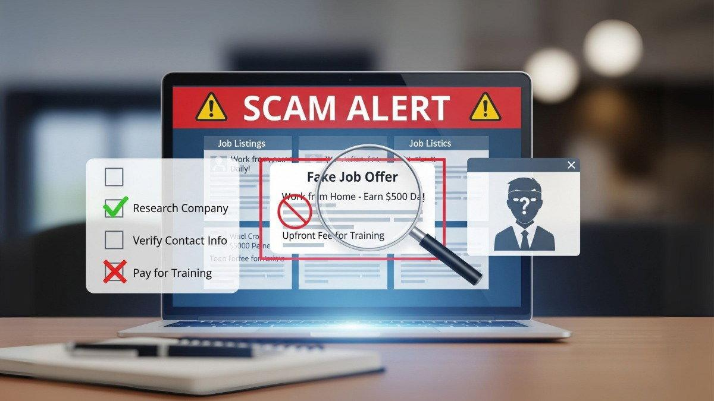

GROUP 5 • CYBERSECURITY AWARENESS
Understanding the Threats Behind the Screen
The internet provides countless opportunities to communicate,
learn, work, and conduct transactions. However, the same
technology can also be used by cybercriminals to deceive
individuals, steal sensitive information, and commit fraud.
Understanding how these attacks work is an important step
toward becoming a safer and more responsible digital citizen.
Explore the Topics ↓
EXPLORE THE DISCUSSION
Table of Contents
Navigate through the eight major topics to understand
online deception, recognize suspicious activities,
and learn how to protect yourself.
01
FOUNDATIONS
Understanding Phishing, Online Scams, and Social Engineering
Before learning how to recognize cyber threats, it is important
to understand what phishing, online scams, and social engineering
mean and how they are connected.

What Is Phishing?
Phishing is a form of cyberattack in which
criminals pretend to be trustworthy individuals, companies,
banks, or organizations to trick people into revealing
confidential information. This information may include
usernames, passwords, bank details, credit card numbers,
and one-time passwords (OTPs).
Phishing commonly happens through emails, text messages,
social media messages, phone calls, and fake websites.
A message may claim that an account has been suspended,
a payment needs verification, or a package cannot be delivered.
It then encourages the recipient to click a link, open an
attachment, or provide personal information.
The danger is that phishing messages can look convincing.
Criminals may copy company logos, use familiar names,
and create websites that closely resemble legitimate services.
Their objective is to make the victim believe that the
communication is genuine.
What Are Online Scams?
Online scams are deceptive activities carried
out through the internet to steal money, personal information,
digital accounts, or other valuable resources. Scammers use
websites, social media platforms, online marketplaces,
messaging applications, and digital payment services to
approach potential victims.
Examples include fake online shops, fraudulent job offers,
investment schemes promising unrealistic profits, romance
scams, fake giveaways, and impersonation scams. Some scams
involve direct requests for money, while others gradually
build trust before asking for sensitive information or payment.
What Is Social Engineering?
Social engineering is the manipulation of
human behavior to persuade someone to reveal information,
perform an action, or provide access that benefits an attacker.
Instead of relying only on technical weaknesses, criminals
exploit emotions, trust, fear, curiosity, authority, and
willingness to help.
For example, a criminal may pretend to be a bank employee
and claim that an account is at risk. The victim may become
frightened and follow the caller's instructions without
checking whether the person is legitimate.
How Are They Different?
| Concept |
Meaning |
Main Objective |
| Phishing |
Deceptive messages or websites designed to obtain sensitive information. |
Steal credentials and personal data. |
| Online Scams |
Fraudulent activities conducted through digital platforms. |
Steal money, information, or valuable resources. |
| Social Engineering |
Psychological manipulation used to influence someone's decisions. |
Make victims perform actions that benefit criminals. |
Important Concept
These threats are closely connected. Social engineering
is often the manipulation technique, phishing is one
method used to deliver the deception, and an online scam
is the broader fraudulent activity. A single attack
may involve all three.
02
ATTACK PROCESS
How Cybercriminals Carry Out Their Attacks
Online scams are not always random messages sent without
planning. Many attacks follow a process designed to gain
a person's attention, establish trust, and eventually
obtain money or sensitive information.

The Common Stages of an Online Attack
01
Target Identification
Criminals identify potential victims by searching
social media profiles, public information,
leaked data, online communities, or contact lists.
They may look for people who are likely to respond
to a particular offer or message.
02
Creating a Convincing Identity
Attackers may impersonate a bank, delivery service,
government agency, employer, online seller, or
someone the victim knows. They can copy logos,
names, photographs, and communication styles
to make their identity appear legitimate.
03
Making Contact
The attacker sends an email, text message,
social media message, phone call, or advertisement.
The communication usually contains an offer,
warning, request, or problem that encourages
the recipient to respond.
04
Manipulating the Victim
Criminals create a reason for immediate action.
They may claim that an account will be blocked,
a limited-time opportunity will disappear,
or an urgent payment is required. This pressure
can prevent the victim from carefully examining
the situation.
05
Obtaining Information or Money
The victim may be directed to a fake website,
asked to reveal an OTP, instructed to transfer
money, or persuaded to download a harmful file.
Once the attacker obtains what they want,
they may use it directly or sell it to others.
06
Misusing the Stolen Information
Stolen credentials may be used to access accounts,
impersonate the victim, conduct unauthorized
transactions, or attempt to compromise other
accounts. Some criminals continue contacting
victims to demand additional payments.
Why These Attacks Can Be Effective
The effectiveness of many scams comes from the combination
of believable identities, emotional pressure, and convenient
digital communication. A message may arrive while someone
is busy, distracted, or expecting a delivery or payment notice.
If the message appears familiar, the recipient may act
before verifying its source.
Remember
A professional-looking message does not automatically
mean it is legitimate. Logos, profile pictures, caller
names, and website designs can be copied or manipulated.
03
COMMON THREATS
Common Types of Online Scams and Phishing Attacks
Scams can appear in many forms. Some imitate legitimate
organizations, while others offer attractive opportunities
or exploit personal relationships. Knowing their common
characteristics helps people identify suspicious activity.

A. Phishing Attacks
1. Email Phishing
Criminals send emails pretending to represent banks,
online services, schools, companies, or government
organizations. The email may ask the recipient to
verify an account, update payment details, or open
an attachment.
Example: An email claims that your
account will be permanently suspended unless you click
a link and confirm your password.
2. Smishing (SMS Phishing)
Smishing uses text messages to trick recipients into
clicking malicious links, sharing personal information,
or making payments. These messages may pretend to come
from delivery companies, banks, mobile networks,
or government agencies.
Example: You receive a text saying
that a package is waiting for delivery and that you must
pay a small fee through an unfamiliar link.
3. Vishing (Voice Phishing)
Vishing involves fraudulent phone calls or voice
messages. The caller may pretend to be a bank employee,
technical support representative, government officer,
or company agent to convince the victim to reveal
confidential information.
Example: A caller claims to be from
your bank and asks you to read your OTP to stop a
supposedly unauthorized transaction.
4. Fake Websites and QR Code Scams
Criminals create websites that imitate legitimate
services or use malicious QR codes to redirect users
to fraudulent pages. These pages may request passwords,
payment details, or other private information.
Example: A fake banking website uses
a name and design similar to the real website to collect
login credentials.
B. Other Common Online Scams
5. Online Shopping Scams
Fraudulent sellers advertise products at unusually
low prices, accept advance payments, and then fail
to deliver the items. Some use copied product photos,
fake reviews, and newly created social media accounts
to appear trustworthy.
Example: A social media shop offers
an expensive smartphone at an unbelievably low price
but disappears after receiving payment.
6. Fake Job and Recruitment Scams
Scammers advertise attractive job opportunities
with unrealistic salaries or minimal requirements.
They may demand registration fees, training payments,
deposits, or personal documents before providing
a real job.
Example: A recruiter offers high
daily earnings for simple online tasks but requires
applicants to deposit money before withdrawing their
supposed earnings.
7. Investment and Cryptocurrency Scams
These scams promise unusually high or guaranteed
profits with little or no risk. Criminals may use
fake investment platforms, fabricated testimonials,
celebrity impersonation, or pressure to recruit
additional investors.
Example: A group chat promotes an
investment opportunity claiming that a small deposit
will double within a few days.
8. Romance and Impersonation Scams
Romance scammers create false relationships to gain
emotional trust before requesting money or sensitive
information. Impersonation scams involve pretending
to be a friend, relative, public figure, or authority
figure to convince someone to send money or reveal
confidential details.
Example: Someone you recently met
online claims to have an emergency and asks you to
transfer money immediately.
Quick Comparison
| Scam Type |
Common Platform |
What the Attacker Wants |
| Email phishing | Email | Passwords and account details |
| Smishing | SMS | Personal data or payments |
| Vishing | Phone calls | OTPs and confidential information |
| Fake websites / QR scams | Websites and QR codes | Login and payment details |
| Shopping scams | Online marketplaces and social media | Payments without delivering products |
| Job scams | Job platforms and messaging apps | Fees, deposits, and personal data |
| Investment scams | Social media and messaging groups | Money and additional investors |
| Romance / impersonation scams | Social media and messaging apps | Money, trust, and private information |
Important Reminder
Scams can combine several methods. For example,
an investment scam may begin with a social media
advertisement, continue through private messages,
and eventually use a fake website to collect money.
04
HUMAN BEHAVIOR
The Psychology Behind Online Scams
Online scams do not depend entirely on technology.
Many succeed because criminals understand how people
think, feel, and make decisions. By manipulating emotions
and behavior, scammers attempt to make victims act
before they have time to verify a situation.

01. Fear
Scammers create fear by claiming that an account
has been hacked, a payment is overdue, or legal
action will be taken. The victim may follow
instructions simply to avoid the threatened
consequence.
Example: "Your bank account will
be blocked today unless you verify your details."
02. Urgency
Criminals set artificial deadlines to prevent
careful thinking. They may claim that a prize,
discount, job offer, or investment opportunity
is available only for a short period.
Example: "You have only ten
minutes to claim your reward."
03. Greed and Excitement
Attractive rewards and promises of easy money
can make people overlook risks. Scammers use
unrealistic profits, free gifts, and unbelievable
discounts to encourage quick decisions.
Example: "Invest ₱1,000 today
and receive ₱10,000 tomorrow."
04. Trust and Authority
Criminals pretend to be respected organizations,
officials, employers, or people the victim knows.
Familiar names and professional-looking profiles
can make false requests appear legitimate.
Example: A caller impersonates
a bank employee and requests an OTP.
05. Curiosity
Suspicious links and attachments may be presented
as shocking news, private photographs, exclusive
information, or unexpected rewards. Curiosity
encourages people to click without checking
the source.
Example: "Look what someone posted
about you. Click here."
06. Sympathy and Emotional Connection
Some scammers invent emergencies or develop
emotional relationships to gain sympathy.
They may claim that they need help with medical
expenses, travel costs, or unexpected problems.
Example: An online acquaintance
repeatedly requests money for personal emergencies.
Why People Can Fall for Scams
Being deceived does not automatically mean that someone
is careless or unintelligent. Scammers deliberately
design their messages to look believable and often
approach people when they are distracted, worried,
excited, or under pressure.
A person may also trust a message because it appears
to come from a familiar institution or because other
people seem to support the offer. This is why verification
is important even when a communication looks convincing.
The Best Defense Against Psychological Manipulation
Pause before responding. When a message creates
intense fear, excitement, sympathy, or pressure,
take time to check the facts through an independent
and official source.
05
DETECTION AND AWARENESS
Warning Signs: How to Recognize a Scam
Recognizing suspicious behavior before responding
can prevent financial loss, identity theft, and
unauthorized access to personal accounts. Although
scams may look different, many share common warning signs.

Common Red Flags
!
Unexpected Requests for Personal Information
Be cautious when an unexpected message asks
for passwords, OTPs, bank details, identification
numbers, or other confidential information.
!
Urgent or Threatening Language
Messages that demand immediate action or threaten
account suspension, penalties, or legal trouble
may be designed to prevent verification.
!
Suspicious Links and Website Addresses
Look carefully at website addresses. Misspellings,
unfamiliar domains, unusual characters, and
unexpected shortened links may indicate
a fraudulent destination.
!
Unrealistic Offers and Guaranteed Rewards
Be skeptical of prizes, discounts, jobs,
and investments that promise unusually large
rewards with little effort or risk.
!
Requests for OTPs or Passwords
Never share your OTP, password, or authentication
code with someone who contacts you unexpectedly.
These codes help protect access to your accounts.
!
Unusual Payment Instructions
Be careful when someone insists on unusual
payment methods, advance deposits, gift cards,
cryptocurrency, or transfers to personal accounts.
!
Unverified Profiles and Organizations
Newly created accounts, copied photographs,
inconsistent contact information, and profiles
with suspicious activity should be checked
before you trust them.
How to Examine a Suspicious Message
Check the Sender
Examine the email address, phone number,
account name, and other identifying details.
Do not rely only on the displayed sender name.
Inspect the Message
Look for unusual requests, unexpected attachments,
threats, pressure, and offers that seem too good
to be true.
Verify the Website
Avoid clicking suspicious links. Visit the
organization's official website independently
or use its verified application.
Confirm Through Official Channels
Contact the organization using contact details
obtained independently from its official website
or application.
Remember: One Warning Sign Is Enough to Investigate
Not every suspicious message will contain spelling
mistakes or poor grammar. Modern scams can be
professionally written and visually convincing.
Always verify unexpected requests.
06
IMPACT AND CONSEQUENCES
The Real Consequences of Falling for Online Scams
The effects of online scams extend beyond the initial
incident. Victims may experience financial difficulties,
privacy violations, emotional distress, and damage to
their personal or professional reputation.

01. Financial Loss
Victims may lose savings, receive unauthorized
charges, or be tricked into transferring money.
In some cases, scammers continue demanding
additional payments by inventing new fees
or emergencies.
02. Identity Theft
Stolen personal information may be used to
impersonate victims, create fraudulent accounts,
or attempt to access services in their names.
Identity theft can create problems that continue
long after the original scam.
03. Account Takeover
When criminals obtain passwords or authentication
information, they may gain access to email,
social media, banking, and other accounts.
They can then impersonate the victim or
attempt further attacks.
04. Privacy and Data Exposure
Personal photographs, conversations, contact
lists, documents, and private information may
be exposed, copied, misused, or shared without
the owner's permission.
05. Emotional and Psychological Effects
Victims may experience stress, embarrassment,
fear, anger, guilt, or loss of confidence.
Some may become hesitant to use online services
or communicate with unfamiliar people.
06. Damage to Relationships and Reputation
Compromised accounts can be used to send
fraudulent messages to friends, relatives,
classmates, or coworkers. This can damage
trust and create confusion within personal
and professional relationships.
Why the Impact Can Continue
A scam does not always end after money or information
has been stolen. Criminals may use the information
they collected to target the same victim again.
For example, someone who has already lost money may
receive another message from a person pretending to
be a recovery agent who promises to retrieve the
lost funds for an additional payment.
This is why victims should avoid sending more money
to anyone promising guaranteed recovery. They should
instead contact their bank or payment provider and
report the incident through appropriate official channels.
Victims Deserve Support, Not Blame
Anyone can be targeted by a scam. Reporting an
incident, seeking assistance, and learning from
what happened are more helpful than remaining
silent because of embarrassment.
07
PRACTICAL APPLICATION
Realistic Scenarios: Recognizing Deception
Understanding definitions is important, but recognizing
how scams appear in everyday situations is equally valuable.
The following fictional scenarios demonstrate common
methods of deception and the safer decisions people
should make.

SCENARIO 01 • DELIVERY PHISHING
The Unexpected Delivery Fee
Maria receives a text message claiming that her
package cannot be delivered because of an unpaid
shipping fee. The message includes a link to a
website that resembles a delivery company's official
page. It asks her to enter her name, address,
and bank card information to complete the payment.
What Makes It Suspicious?
- The message was unexpected.
- It uses a link to request payment information.
- The website address has not been verified.
- It asks for sensitive information through an unfamiliar page.
What Should Maria Do?
She should avoid clicking the link, check her
order through the delivery company's official
website or application, and contact the company
through independently verified contact details.
SCENARIO 02 • JOB SCAM
The Too-Good-to-Be-True Job Offer
Daniel sees an online advertisement offering a
high daily income for completing simple tasks
from home. A recruiter contacts him through a
messaging application and says he must deposit
money to activate his account before he can
withdraw his earnings.
What Makes It Suspicious?
- The promised income is unusually attractive.
- The recruiter requests an upfront deposit.
- The job details and employer are not independently verified.
- The process involves paying money to earn money.
What Should Daniel Do?
He should not send money or personal documents.
He should verify the company, search for
legitimate contact information, and check
whether the job opportunity is genuine.
SCENARIO 03 • BANK IMPERSONATION
The Fake Bank Security Call
Angela receives a phone call from someone claiming
to be a bank employee. The caller says that a
suspicious transaction has been detected and
asks Angela to provide the OTP sent to her phone
to cancel the transaction.
What Makes It Suspicious?
- The caller unexpectedly requests an OTP.
- The caller uses fear to pressure Angela.
- The caller's identity has not been verified.
- The request involves confidential account security information.
What Should Angela Do?
She should never share the OTP. She should
end the call and contact her bank using
the official number found on its website,
banking application, or payment card.
SCENARIO 04 • INVESTMENT SCAM
The Guaranteed Investment Return
Carlo is invited to join an online investment
group. Members share screenshots of supposed
profits and claim that everyone can earn
guaranteed returns within a few days.
Carlo is encouraged to deposit a larger amount
before the opportunity closes.
What Makes It Suspicious?
- It promises unusually high or guaranteed returns.
- It relies on screenshots and testimonials instead of verifiable evidence.
- It creates pressure to invest quickly.
- The company and investment registration have not been verified.
What Should Carlo Do?
He should avoid sending money, independently
verify the company and its authorization,
and consult official financial regulatory
information before considering any investment.
SCENARIO 05 • IMPERSONATION SCAM
The Urgent Message From a Friend
Jessica receives a message from an account
using her friend's photograph and name. The
sender claims to have lost access to a payment
account and urgently needs Jessica to transfer
money.
What Makes It Suspicious?
- The request for money is unexpected.
- The sender creates urgency.
- A profile photograph does not prove identity.
- The request has not been confirmed through another channel.
What Should Jessica Do?
She should contact her friend through a
separate, previously trusted communication
channel and confirm the request before
taking any action.
Lesson From These Scenarios
Different scams may use different stories, but
many share the same strategy: gain attention,
create trust or pressure, and convince someone
to act without proper verification. Stop and
verify before responding.
08
PREVENTION AND RESPONSE
Protecting Yourself and Responding to Scams
Cybersecurity is not only about recognizing threats.
It also involves developing safe habits, protecting
personal information, securing digital accounts,
and knowing what to do when something goes wrong.

Part A: How to Protect Yourself
01
Use Strong and Unique Passwords
Create long, unique passwords for different
accounts. Avoid using easily guessed information
such as birthdays, names, or simple number
combinations. A reputable password manager
can help organize passwords securely.
02
Enable Multi-Factor Authentication
Multi-factor authentication (MFA) adds another
layer of account protection. It may require
a password together with an authenticator
approval, security key, or another verification
method. Never share authentication codes
with unexpected callers or messages.
03
Verify Before Clicking
Avoid opening unexpected links or attachments.
If a message claims to come from a company
or institution, visit its official website
independently instead of using the link
provided in the message.
04
Keep Devices and Applications Updated
Install operating system, browser, and
application updates. Updates often include
security improvements that address known
weaknesses and help protect devices from
certain threats.
05
Protect Personal Information
Avoid publicly sharing sensitive details
such as addresses, identification documents,
account information, and private contact
details. Review privacy settings and
think carefully before posting personal
information online.
06
Use Trusted Websites and Applications
Download applications from official sources,
check website addresses, and look for
legitimate contact information. Be cautious
of unfamiliar websites requesting payments
or confidential details.
07
Think Before Sending Money
Independently verify payment requests,
investment offers, job opportunities,
and emergencies. Do not let pressure,
promises, or emotional appeals replace
careful decision-making.
08
Back Up Important Data
Maintain secure backups of important
documents and files. Backups can help
reduce the impact of device failure,
accidental deletion, and certain
malware incidents.
Part B: The SAFE Method
The SAFE method is a simple awareness guide that
summarizes practical actions people can take
when they encounter suspicious messages or offers.
S
Stop
Do not immediately click, reply, download,
share information, or send money. Pause
when a message creates pressure.
A
Assess
Examine the sender, request, link, payment
method, and warning signs. Consider whether
the situation is expected and reasonable.
F
Find Official Verification
Contact the organization or person through
an independently verified website, phone
number, application, or communication channel.
E
Exclude and Report
Do not engage with suspicious accounts.
Block or report them through the platform
and appropriate authorities when necessary.
Part C: What to Do If You Have Been Scammed
If you suspect that you have fallen victim to an
online scam, act as soon as possible. Quick action
may help limit further damage, protect accounts,
and provide useful information for an investigation.
01
Stop All Communication and Payments
Do not send additional money, provide more
information, or follow further instructions
from the suspected scammer. Be cautious
of anyone demanding extra fees to recover
your money.
02
Contact Your Bank or Payment Provider
If you shared financial information or
transferred money, immediately contact
your bank, e-wallet provider, or payment
service through its official channels.
Ask about securing your account and
reporting unauthorized transactions.
03
Secure Your Accounts
Change compromised passwords using a
trusted device. Enable MFA, sign out
of unfamiliar sessions, review account
activity, and check recovery email
addresses and phone numbers.
04
Preserve Evidence
Keep screenshots, messages, email headers
when available, website addresses, transaction
receipts, account names, phone numbers,
and other relevant details. Do not delete
important evidence before documenting it.
05
Report the Incident
Report the incident to the relevant platform,
financial institution, and appropriate
government or law-enforcement agency.
Provide the evidence you have collected.
06
Inform People Who May Be Affected
If your account has been compromised,
warn friends, relatives, classmates,
or coworkers. Criminals may use your
account to send fraudulent messages
to other people.
Part D: Where to Report Cybercrime in the Philippines
If you encounter an online scam or become a victim,
you can seek assistance through appropriate Philippine
reporting channels. For financial fraud, contact
your bank or e-wallet provider promptly as well.
Cybercrime Investigation and Coordinating Center (CICC)
The CICC coordinates efforts related to the
prevention, investigation, and suppression
of cybercrime in the Philippines.
Hotline: 1326
Email: report@cicc.gov.ph
Visit the official CICC website ↗
Bangko Sentral ng Pilipinas (BSP)
For concerns involving financial institutions
supervised by the BSP, first report the issue
to the concerned bank or financial institution.
You may then use the BSP's official consumer
assistance channels for appropriate complaints.
Visit the official BSP website ↗
Philippine National Police Anti-Cybercrime Group
The PNP Anti-Cybercrime Group handles law
enforcement activities related to cybercrime.
Consult its official website for reporting
information and available services.
Visit the official PNP Anti-Cybercrime Group website ↗
National Bureau of Investigation (NBI)
The NBI investigates various offenses,
including cases involving cybercrime.
Check its official website for investigation
services and reporting procedures.
Visit the official NBI website ↗
Final Reminder: Act Quickly and Report
If money or account information has been compromised,
contact the relevant financial institution immediately.
Preserve evidence and report the incident through
official channels. Never assume that reporting
guarantees recovery, but prompt action can help
limit additional harm.
A SAFER DIGITAL FUTURE STARTS WITH YOU
Think Before You Click. Verify Before You Trust.
Cybersecurity is a shared responsibility. Every person
who learns to recognize deception, protects personal
information, and reports suspicious activity contributes
to a safer online environment. Stay informed, remain
cautious, and help others become more aware.
Back to Home ↑
FURTHER READING
References and Reliable Resources
The following organizations provide educational
information and guidance about phishing, fraud,
online safety, and cybercrime prevention.
Cybersecurity and Infrastructure Security Agency (CISA)
Cybersecurity awareness and phishing prevention resources.
https://www.cisa.gov/
Note: This educational website is intended for
cybersecurity awareness. For actual incidents,
consult the appropriate financial institution
or official reporting agency.